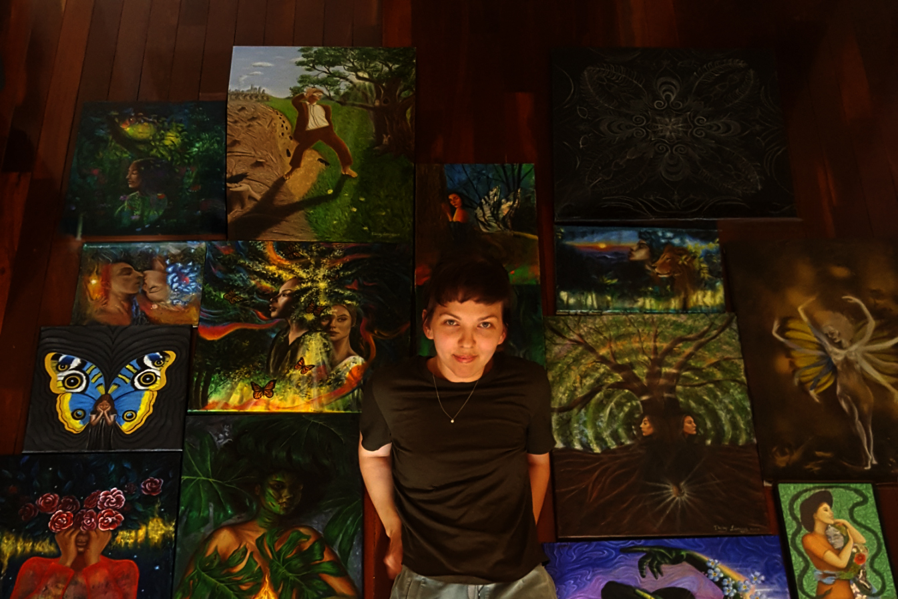

“Art enables us to find ourselves and lose ourselves at the same time.” – Thomas Merton
Driven by a deep curiosity and a passion for creation. Specializing in portraiture, I blend natural elements, vibrant colors, and intricate patterns to bring my visions to life.
"My process begins with observing the world around me, where inspiration strikes. I use acrylics for foundational layers before finishing with oils to create depth and emotion. I love to push my skills further and explore the inner world of myself, allowing each piece to become both a reflection of my surroundings and a journey inward."